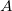
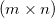

は単位行列です。
は単位行列です。
内容 |
Xファンクションminverse は、随伴行列をその決定因子で除算する方法で、逆行列を生成します。行列が逆行列または決定因子を持たない場合、Moore-Penrose疑似逆行列が計算されます。
この機能を使用するには、
| 再計算 |
分析結果の再計算を制御します。
詳細は、以下をご覧下さい。分析結果の再計算 |
|---|---|
| 入力行列 |
入力行列を選択します 範囲制御についてはこちらを確認してください：入力データを指定する |
| 出力行列 |
逆行列の出力場所を指定します。 範囲制御についてはこちらを確認してください：結果の出力 |
 の正方階数行列に対し、逆行列 (正則行列)は次の関係を満たします。
ここで は単位行列です。
の計算は次のように表現できます。
ここで、 は行列 の決定因子で、 は随伴行列です。
は行列 の決定因子で、 は随伴行列です。

 ^{i+j}|A^{ij}|")
ここで、 は、 の
は、 の  列
列  行を取り除いた行列
行を取り除いた行列 \times (n-1)") です。
です。
行列が逆行列または決定因子を持たない場合、Moore-Penrose疑似逆行列が計算されます。これは、どんな \!") 行列に対しても存在します。
行列に対しても存在します。
 行列の が与えられると、 は固有の
は固有の  疑似行列です。 でA が最大階数行列の場合、 は次の式を満たします。
疑似行列です。 でA が最大階数行列の場合、 は次の式を満たします。
\!^{-1}A\!^T")
計算は、行列 の特異値分解(SVD)に基づいており、許容値以内のどんな特異値も0として扱われます。 の階数が最大でない場合、行列は小さい行列に合わせて縮小されます。